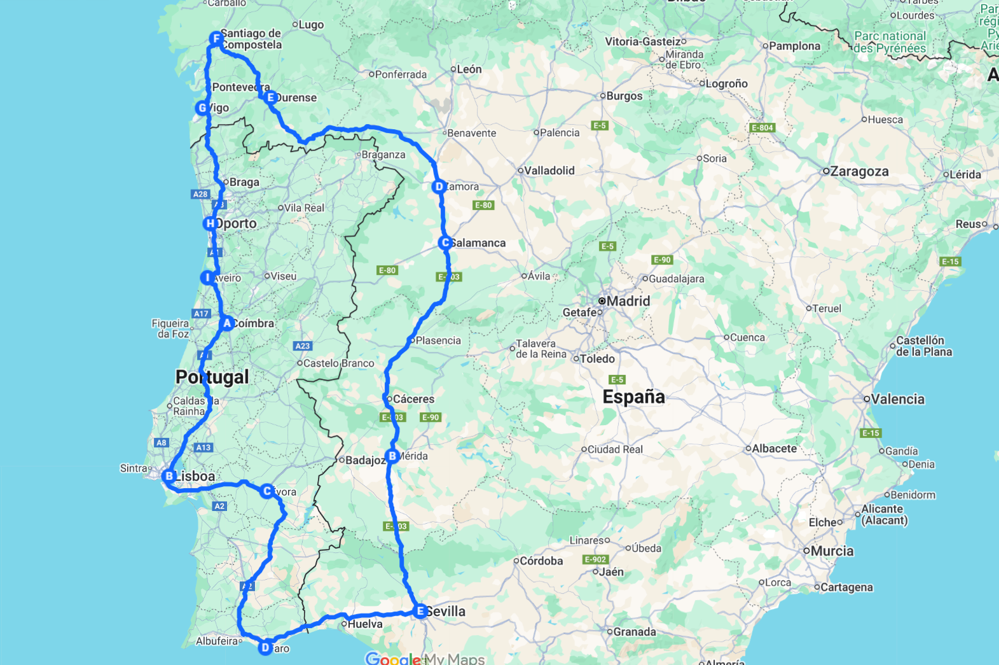

RUTA DE LA PLATA + PORTUGAL
Recorrer en moto la Ruta de la Plata junto con Portugal es adentrarse en un viaje que combina historia, paisajes cambiantes y la esencia más auténtica de la Península Ibérica. Desde Sevilla, la carretera se abre hacia el norte siguiendo la huella de una vía milenaria que fue arteria del Imperio romano y que hoy se convierte en un trazado ideal para los amantes de las dos ruedas. Cada ciudad atravesada es un testigo del tiempo: Mérida con su legado clásico, Salamanca con su aire universitario, Zamora y Ourense con el peso de la tradición y Santiago de Compostela, punto de encuentro espiritual que marca un hito en el recorrido.
El viaje se prolonga hacia el oeste, cruzando la frontera para descubrir Portugal, donde la carretera adquiere un ritmo diferente y se entrelaza con el carácter acogedor de su gente. Vigo y Oporto sorprendieron con su vitalidad, Aveiro con sus canales y Coimbra con la serenidad de su historia universitaria. Lisboa irrumpe como un cruce de caminos, vibrante y luminosa, antes de adentrarse en el Alentejo con Évora como corazón cultural y rural. Finalmente, Faro recibe al viajero con la calma atlántica del Algarve, un destino que simboliza el cierre perfecto de una ruta completa y diversa.
Kilómetro a kilómetro, esta travesía ofrece al motorista el equilibrio perfecto entre carretera y descubrimiento. Las autopistas permiten avanzar con fluidez en algunos tramos, mientras que las carreteras secundarias regalan curvas, horizontes abiertos y paisajes que cambian sin cesar: dehesas, sierras, viñedos, llanuras doradas y costas bañadas por el Atlántico. La moto se convierte en el vehículo ideal para vivir la libertad de estos contrastes, donde cada jornada es una nueva postal y cada curva guarda la promesa de un paisaje distinto.
Más que un simple recorrido, la Ruta de la Plata + Portugal es un viaje de largo aliento pensado para quienes buscan sentir la Península en toda su amplitud. Historia, cultura, gastronomía y naturaleza se entrelazan en un itinerario que une dos países y múltiples identidades, siempre bajo el hilo conductor de la carretera. Una experiencia diseñada para motoristas que entienden que la auténtica recompensa está en el mismo camino, en las emociones compartidas y en el recuerdo imborrable de haber rodado por uno de los ejes más emblemáticos del sur de Europa.
✔️ TU VIAJE INCLUYE …
- Pack de Bienvenida
- Desayunos en Hotel y Cenas
- 12 días y 11 noches en Hoteles
- Aparcamiento para tu vehículo
- Video reportaje del viaje
- Seguro de Protección Civil
- 2 Personas coordinan el grupo
- En las comidas y cenas solo se incluye ” Agua “
❌ TU VIAJE NO INCLUYE …
- Motocicleta para el viaje
- Cualquier concepto no especificado en el apartado ” Tu Viaje incluye …”
- Gasolina y peajes de Autopistas o Autovías
- No se cubren gastos derivados de conductas negligentes o irresponsables
- El seguro de protección civil incluido solo cubre a terceros y no reemplaza el seguro personal obligatorio
- Bebidas en ruta y por supuesto bebidas alcohólicas ni bebidas en minibar de hoteles
- Entradas a Monumentos
- Las propinas son voluntarias y a discreción del cliente
🗒️ TENER EN CUENTA …
- Cada uno se hará responsable de su propio equipaje
- Portar Herramientas necesarias para el mantenimiento de tu moto y un Kit de reparapinchazos
- Llevar los medicamentos personales y cualquier material médico necesario
- Pasaporte y visado en regla
- Permiso de circulación y tarjeta ITV, Carnet de Conducir

DÍA 1
Reunión en Sevilla
El viaje comienza en Sevilla, punto de partida donde el grupo se reúne para dar forma a una experiencia de largo recorrido. Entre presentaciones, revisiones de motos y primeras conversaciones, se enciende la chispa de lo que serán días intensos de carretera y camaradería.
DÍA 2
Sevilla – Mérida
La ruta arranca dejando atrás la vitalidad sevillana para adentrarse en la histórica Vía de la Plata. La carretera se extiende con fluidez, alternando tramos rápidos con paisajes de dehesa y horizontes amplios. El destino es Mérida, donde el grupo llega con la sensación de haber abierto de verdad el viaje.
DÍA 3
Mérida – Salamanca
Una etapa larga que conduce hacia el norte peninsular. Los kilómetros fluyen en carreteras que invitan a mantener un ritmo constante, atravesando campos, sierras y llanuras. El día se convierte en un ejercicio de resistencia y disfrute, con Salamanca como punto final de una jornada cargada de carretera.
DÍA 4
Salamanca – Zamora
El recorrido hacia Zamora ofrece un cambio de escala: menos kilómetros, pero con la misma intensidad de carretera. La moto se desliza entre campos ondulados y carreteras secundarias que hacen de la jornada un trayecto relajado, perfecto para saborear el viaje en cada curva.
DÍA 5
Zamora – Ourense
La ruta gana carácter al entrar en tierras gallegas. Las carreteras se vuelven más sinuosas, con paisajes que combinan ríos, montañas y valles. Es un día para dejarse llevar por la conducción y disfrutar de un entorno que anticipa la grandeza de lo que está por venir.
DÍA 6
Ourense – Santiago de Compostela
Un tramo más corto en kilómetros pero lleno de emoción. La carretera asciende y desciende en un continuo juego de curvas, mientras la moto se convierte en el mejor aliado para recorrer el paisaje gallego. Santiago recibe al grupo como un hito en la ruta, cargado de simbolismo y satisfacción.
DÍA 7
Santiago de Compostela – Vigo – Oporto
El viaje se abre hacia el Atlántico, siguiendo carreteras que alternan costa y montaña. El paso por Vigo da paso a la frontera portuguesa, donde el trazado invita a fluir entre curvas y rectas que se acercan al mar. Oporto recibe a los viajeros con su vitalidad y espíritu acogedor.
DÍA 8
Día libre en Oporto
Jornada de descanso para las motos y de respiro para los pilotos. Es tiempo de relajarse, recargar energías y disfrutar a otro ritmo antes de continuar hacia el sur.
DÍA 9
Oporto – Aveiro – Coimbra
La ruta sigue por carreteras costeras y del interior, donde el aire atlántico acompaña cada kilómetro. El día ofrece variedad de paisajes, desde horizontes abiertos junto al mar hasta el verde de la zona central portuguesa, con Coimbra como destino final.
DÍA 10
Coimbra – Lisboa
Etapa que lleva hacia la capital portuguesa. La carretera alterna tramos de autopista y secundarias, un recorrido que combina la fluidez del avance con momentos de disfrute motero. Lisboa se alza como destino vibrante y final de una larga jornada.
DÍA 11
Lisboa – Évora – Faro
El viaje desciende hacia el sur atravesando el Alentejo, un territorio de horizontes anchos y carreteras que parecen infinitas. Es una etapa de contrastes: desde la vitalidad urbana hasta la calma del campo y finalmente la brisa atlántica del Algarve en Faro.
DÍA 12
Faro – Sevilla y despedida
Llegó la hora de volver a casa. Iremos juntos hasta Sevilla si es vuestro destino, y si no, en Faro nos diremos adiós con una emotiva despedida, guardando los recuerdos de todo lo vivido